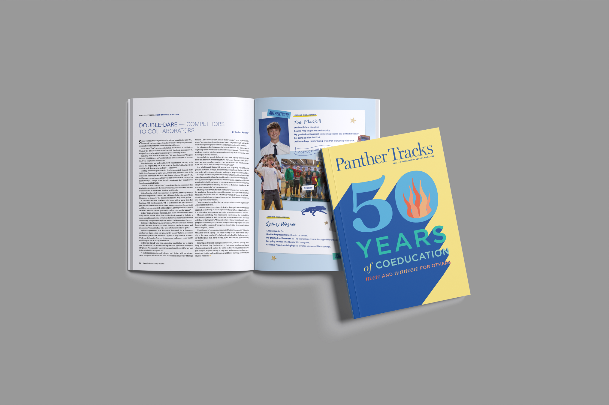
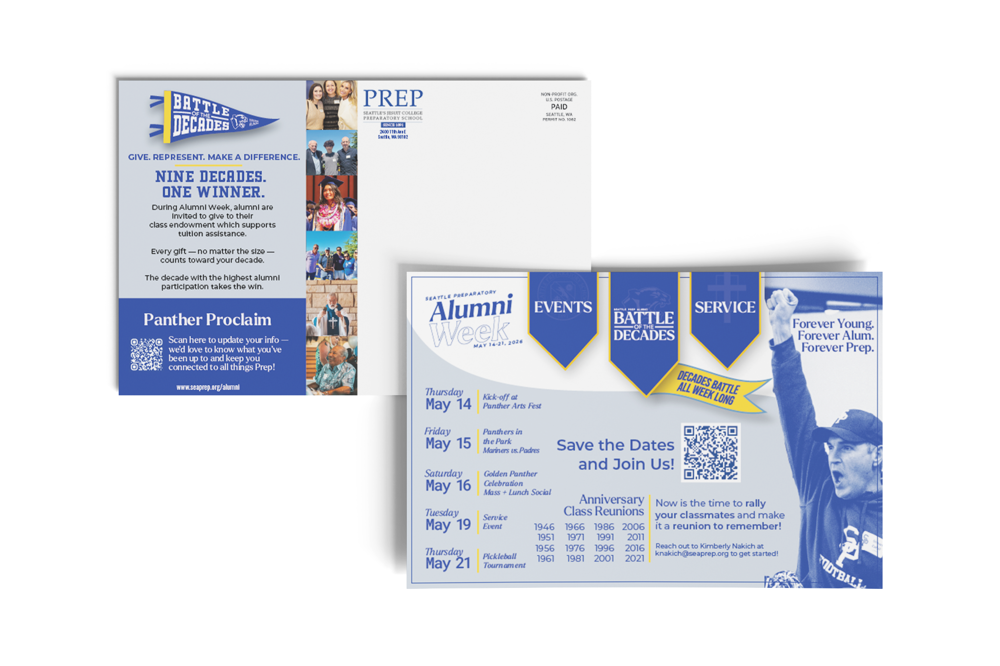
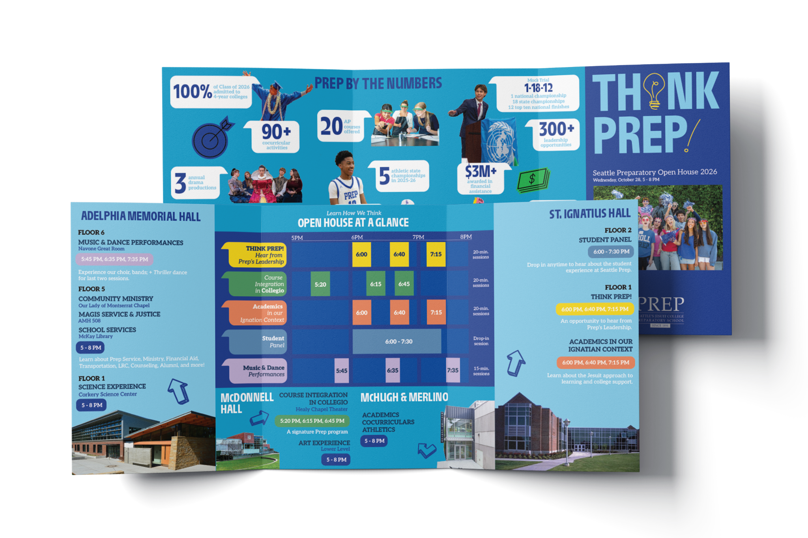
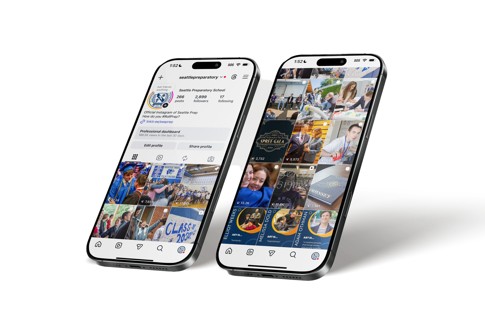

Panther Tracks
Writing, photography, and production for Seattle Prep’s annual alumni and community magazine.
Stories told through photos, motion, and video.
A selection of moments, connections, and everyday stories.

Writing, photography, and production for Seattle Prep’s annual alumni and community magazine.

A refreshed Alumni Week identity brought to life across print, web, and digital communications.

Integrated admissions campaigns, print design, storytelling, and video built around THINK PREP.

Platform-specific content strategy, community storytelling, and performance-informed social media management.